library(tidyverse)
library(tidyquant)
library(patchwork)
library(scales)
library(writexl)
library(zoo)
library(moments)
library(rugarch); library(broom)
library(gt)Contents
- Volatility as annualized standard deviation
- Varies by frequency (periodicity) and window
- Exponentially weighted moving average (EWMA)
- GARCH(1,1)
- The actual returns are non-normal (heavy-tailed)
Load packages
Volatility as annualized standard deviation
Retrieve prices, calculate log returns and create all_returns_* dataframe
# symbols <- c("PG", "JPM", "NVDA")
# mult_stocks <- tq_get(symbols, get = "stock.prices", from = "2010-12-31", to = "2023-11-09")
# mult_stocks$symbol <- mult_stocks$symbol <- factor(mult_stocks$symbol, levels = c("PG", "JPM", "NVDA"))
# saveRDS(mult_stocks, "mult_stocks.rds")
mult_stocks <- readRDS("mult_stocks.rds")
# tq_mutate_fun_options() returns list of compatible mutate functions by pkg
calculate_returns <- function(data, period) {
data |>
group_by(symbol) |>
tq_transmute(select = adjusted,
mutate_fun = periodReturn,
period = period,
type = "log")
}
periods <- c("daily", "weekly", "monthly", "quarterly", "yearly")
# all_returns_daily <- calculate_returns(mult_stocks, "daily")
# all_returns_weekly <- calculate_returns(mult_stocks, "weekly")
# all_returns_monthly <- calculate_returns(mult_stocks, "monthly")
# all_returns_quarterly <- calculate_returns(mult_stocks, "quarterly")
all_returns <- set_names(periods) |> map(~ calculate_returns(mult_stocks, .x))
all_returns <- map(all_returns, ~ .x %>%
group_by(symbol) %>%
arrange(date) %>% # Sort by date within each group
slice(-1) %>% # Remove the first row for each group
ungroup())
all_returns_daily <- all_returns$daily
all_returns_weekly <- all_returns$weekly
all_returns_quarterly <- all_returns$quarterly
all_returns_monthly <- all_returns$monthlySave to Excel (to manually check calcualtions). But after first time, eval = FALSE
write_xlsx(all_returns, path = "all_returns.xlsx")
# This assumes 'all_returns' is a named list of data frames
# and each data frame has a 'symbol' column for stock tickers
# Step 1: Split each data frame by 'symbol' and create a named list of data frames
all_returns_by_stock <- map(all_returns, function(df) {
split(df, df$symbol)
})
# Step 2: Name each data frame according to the period and stock
all_returns_by_stock <- imap(all_returns_by_stock, function(df_list, period_name) {
set_names(df_list, paste(period_name, names(df_list), sep = "_"))
})
# Flatten the list of lists into a single list of data frames
all_returns_by_stock_flat <- flatten(all_returns_by_stock)
# Step 3 and 4: Write the list of data frames to an Excel file
write_xlsx(all_returns_by_stock_flat, path = "all_returns_by_stock.xlsx")Different frequencies but the same (four year) window
calc_rolling_sd <- function(data, return_col_name, window_width) {
data |>
group_by(symbol) |>
mutate(rolling_sd = rollapply(get(return_col_name),
width = window_width,
FUN = sd,
align = "right", fill = NA)) |>
ungroup()
}
# Window lengths for each frequency (aka, periodicity)
W.daily <- 250 * 4
W.weekly <- 52 * 4
W.monthly <- 12 * 4
W.quarterly <- 4 * 4
all_returns_daily <- calc_rolling_sd(all_returns_daily, "daily.returns", W.daily)
all_returns_weekly <- calc_rolling_sd(all_returns_weekly, "weekly.returns", W.weekly)
all_returns_monthly <- calc_rolling_sd(all_returns_monthly, "monthly.returns", W.monthly)
all_returns_quarterly <- calc_rolling_sd(all_returns_quarterly, "quarterly.returns", W.quarterly)Still different frequencies (aka, periodicity) but annualized
# Function to calculate annualized volatility and add frequency
calc_annualized_vol <- function(df, sd_col, periods_per_year, freq_label) {
df |>
mutate(
annualized_vol = !!rlang::sym(sd_col) * sqrt(periods_per_year),
frequency = freq_label
)
}
# Calculate annualized volatility for each dataframe EXCEPT Quarterly
all_returns_daily <- calc_annualized_vol(all_returns_daily, "rolling_sd", 252, "Daily")
all_returns_weekly <- calc_annualized_vol(all_returns_weekly, "rolling_sd", 52, "Weekly")
all_returns_monthly <- calc_annualized_vol(all_returns_monthly, "rolling_sd", 12, "Monthly")
# Combine the data frames into one
all_returns_combined <- bind_rows(all_returns_daily, all_returns_weekly, all_returns_monthly)
all_returns_combined <- all_returns_combined |>
mutate(frequency = factor(frequency, levels = c("Daily", "Weekly", "Monthly")))
# Plot the combined data with ggplot2
color_pg <- "chartreuse2" # don't end up using these
color_jpm <- "dodgerblue2"
color_nvda <- "coral1"
color_tenor1 <- "khaki3"
color_tenor2 <- "coral"
color_tenor3 <- "lightseagreen"
color_tenor4 <- "slateblue"
custom_colors <- c("Daily" = color_tenor1, "Weekly" = color_tenor2, "Monthly" = color_tenor3)
all_returns_combined |> ggplot(aes(x = date, y = annualized_vol,
color = frequency,
group = interaction(symbol, frequency))) +
geom_line() +
labs(title = "Annualized Volatility by Frequency",
x = "Date",
y = "Annualized Volatility") +
theme_minimal() +
scale_color_manual(values = custom_colors) +
facet_wrap(~symbol)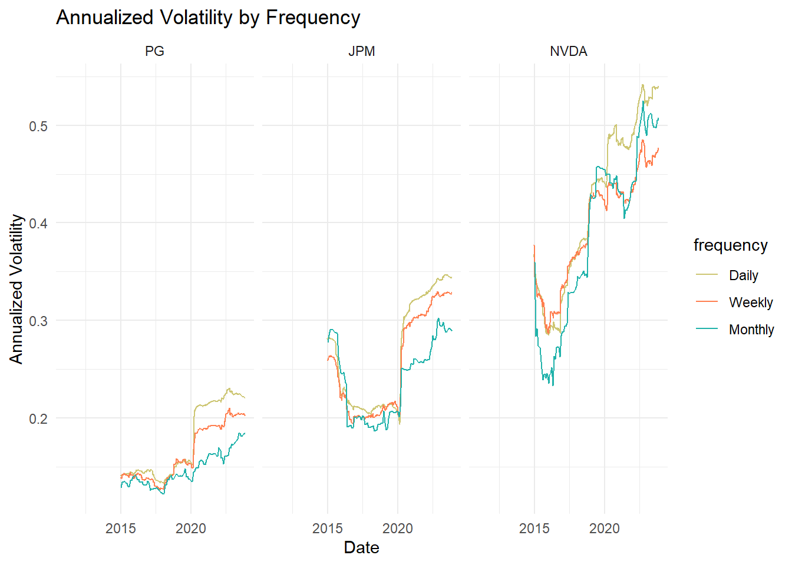
# mean annualized vol by symbol and frequency
all_returns_combined |>
group_by(symbol, frequency) |>
summarize(annualized_vol = mean(annualized_vol, na.rm = TRUE)) |>
pivot_wider(names_from = frequency, values_from = annualized_vol) |>
arrange(Daily)# A tibble: 3 × 4
# Groups: symbol [3]
symbol Daily Weekly Monthly
<fct> <dbl> <dbl> <dbl>
1 PG 0.176 0.164 0.147
2 JPM 0.265 0.255 0.239
3 NVDA 0.421 0.396 0.388Different windows but same (DAILY) frequency
# colors from my var article
# col_ticker_fills <- c("PG" = "chartreuse2", "JPM" = "dodgerblue2", "NVDA" = "coral1")
windows <- c(20, 90, 250, 500)
# parse into per-ticker df and delete rolling_sd column from prior
pg_data <- all_returns_daily |> filter(symbol == "PG") |> select(!rolling_sd)
jpm_data <- all_returns_daily |> filter(symbol == "JPM") |> select(!rolling_sd)
nvda_data <- all_returns_daily |> filter(symbol == "NVDA") |> select(!rolling_sd)
# Specify your window sizes directly in the loop
for (w in windows) {
pg_data <- pg_data |>
mutate(!!paste0("rolling_sd_", w) := rollapply(daily.returns,
width = w,
FUN = sd,
align = "right", fill = NA))
jpm_data <- jpm_data |>
mutate(!!paste0("rolling_sd_", w) := rollapply(daily.returns,
width = w,
FUN = sd,
align = "right", fill = NA))
nvda_data <- nvda_data |>
mutate(!!paste0("rolling_sd_", w) := rollapply(daily.returns,
width = w,
FUN = sd,
align = "right", fill = NA))
}
plot_rolling_sd <- function(data, stock_name, ylim, custom_colors, custom_alphas) {
# Assume data has columns 'date', and rolling_sd_* where * is the window size
rolling_sd_long <- data |>
pivot_longer(cols = starts_with("rolling_sd_"), names_to = "window", values_to = "rolling_sd")
desired_order <- c("rolling_sd_20", "rolling_sd_90", "rolling_sd_250", "rolling_sd_500")
rolling_sd_long$window <- factor(rolling_sd_long$window, levels = desired_order)
ggplot(rolling_sd_long, aes(x = date, y = rolling_sd, color = window)) +
geom_line(aes(alpha = window)) +
scale_color_manual(values = custom_colors) +
scale_alpha_manual(values = custom_alphas) +
labs(title = paste("Rolling Daily Vol (StdDev) for", stock_name),
subtitle = paste("Different windows:", paste(windows, collapse = ", "), "days"),
x = "Date",
y = "Rolling Standard Deviation") +
theme_minimal() +
coord_cartesian(ylim = ylim) +
theme(legend.position = "right")
}
# custom_colors <- c("rolling_sd_20" = "firebrick1",
# "rolling_sd_90" = "royalblue",
# "rolling_sd_250" = "springgreen4",
# "rolling_sd_500" = "darkorange")
custom_colors <- c("rolling_sd_20" = color_tenor1,
"rolling_sd_90" = color_tenor2,
"rolling_sd_250" = color_tenor3,
"rolling_sd_500" = color_tenor4)
custom_alphas <- c("rolling_sd_20" = 0.5,
"rolling_sd_90" = 0.7,
"rolling_sd_250" = 1.0,
"rolling_sd_500" = 1.0)
pg_roll_plot <- plot_rolling_sd(pg_data, "PG", c(0, 0.0350), custom_colors, custom_alphas)
jpm_roll_plot <- plot_rolling_sd(jpm_data, "JPM", c(0, 0.0550), custom_colors, custom_alphas)
nvda_roll_plot <- plot_rolling_sd(nvda_data, "NVDA", c(0, 0.0750), custom_colors, custom_alphas)
pg_roll_plot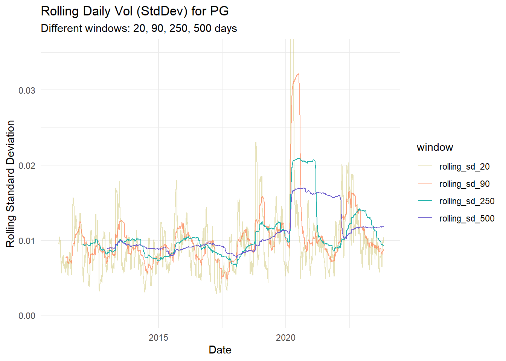
jpm_roll_plot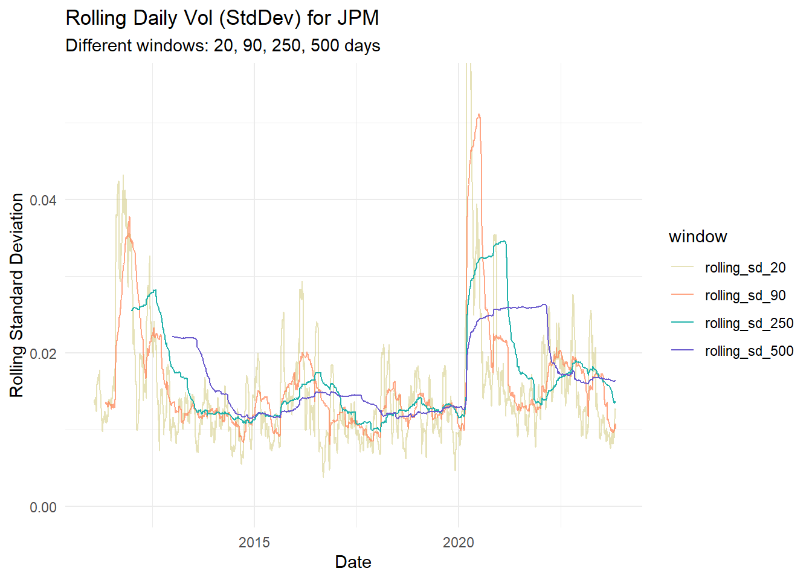
nvda_roll_plot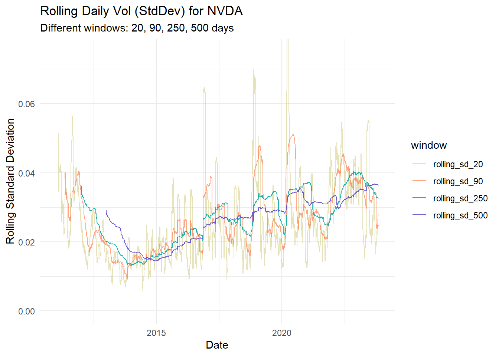
# Function to summarize and extract the most recent rolling standard deviations
summarize_and_extract_recent_sd <- function(data) {
summarized <- data %>%
summarize(
mean_sd_20 = mean(rolling_sd_20, na.rm = TRUE),
mean_sd_90 = mean(rolling_sd_90, na.rm = TRUE),
mean_sd_250 = mean(rolling_sd_250, na.rm = TRUE),
mean_sd_500 = mean(rolling_sd_500, na.rm = TRUE)
)
most_recent <- data %>%
slice(n()) %>%
select(rolling_sd_20, rolling_sd_90, rolling_sd_250, rolling_sd_500) %>%
rename(recent_sd_20 = rolling_sd_20,
recent_sd_90 = rolling_sd_90,
recent_sd_250 = rolling_sd_250,
recent_sd_500 = rolling_sd_500)
bind_cols(summarized, most_recent)
}
# Apply the function to each data frame and bind rows into a single tibble
summary_tibble <- bind_rows(
pg = summarize_and_extract_recent_sd(pg_data),
jpm = summarize_and_extract_recent_sd(jpm_data),
nvda = summarize_and_extract_recent_sd(nvda_data),
.id = "stock"
)
summary_tibble |>
gt() |>
tab_header(
title = "Rolling daily volatility"
) |>
cols_label(
mean_sd_20 = "20",
mean_sd_90 = "90",
mean_sd_250 = "250",
mean_sd_500 = "500",
recent_sd_20 = "20",
recent_sd_90 = "90",
recent_sd_250 = "250",
recent_sd_500 = "500"
) |>
fmt_percent(columns = 2:9,
rows = everything()) |>
tab_spanner(
label = "Mean",
columns = 2:5
) |>
tab_spanner(
label = "Most recent (2023-11-08)",
columns = 6:9
) |>
cols_width(
mean_sd_20 ~ px(80),
recent_sd_20 ~ px(80)
) |>
data_color(
columns = 6:9,
rows = 3,
method = "numeric",
domain = c(0.02, 0.04),
palette = c("lightcyan", "lightcyan3")
)| Rolling daily volatility | ||||||||
|---|---|---|---|---|---|---|---|---|
| stock | Mean | Most recent (2023-11-08) | ||||||
| 20 | 90 | 250 | 500 | 20 | 90 | 250 | 500 | |
| pg | 0.98% | 1.03% | 1.07% | 1.09% | 0.96% | 0.86% | 0.93% | 1.18% |
| jpm | 1.53% | 1.61% | 1.66% | 1.66% | 1.26% | 1.01% | 1.36% | 1.64% |
| nvda | 2.54% | 2.64% | 2.66% | 2.64% | 2.76% | 2.47% | 3.25% | 3.63% |
# GPT wrote this routine to summarize!
summarize_rolling_sd <- function(data) {
# Define the desired order for the window sizes
window_order <- c("rolling_sd_20", "rolling_sd_90", "rolling_sd_250", "rolling_sd_500")
summarized_data <- data %>%
summarize(across(starts_with("rolling_sd_"), mean, na.rm = TRUE)) %>%
pivot_longer(cols = everything(), names_to = "window", values_to = "rolling_sd") %>%
mutate(window = factor(window, levels = window_order)) %>%
arrange(window)
return(summarized_data)
}
# Apply the summarize function to each stock and combine into a single tibble
all_summaries <- bind_rows(
pg = summarize_rolling_sd(pg_data),
jpm = summarize_rolling_sd(jpm_data),
nvda = summarize_rolling_sd(nvda_data),
.id = "stock"
)
# Print the combined summarized data
print(all_summaries)# A tibble: 12 × 3
stock window rolling_sd
<chr> <fct> <dbl>
1 pg rolling_sd_20 0.00977
2 pg rolling_sd_90 0.0103
3 pg rolling_sd_250 0.0107
4 pg rolling_sd_500 0.0109
5 jpm rolling_sd_20 0.0153
6 jpm rolling_sd_90 0.0161
7 jpm rolling_sd_250 0.0166
8 jpm rolling_sd_500 0.0166
9 nvda rolling_sd_20 0.0254
10 nvda rolling_sd_90 0.0264
11 nvda rolling_sd_250 0.0266
12 nvda rolling_sd_500 0.0264 Exponentially weighted moving average (EWMA)
# Function to calculate EWMA variance
calculate_ewma_variance <- function(returns, lambda, W) {
ewma_var <- rep(NA, length(returns))
ewma_var[W] <- var(returns[1:W]) # Initialize the first EWMA variance
for (i in (W+1):length(returns)) {
# Using the EWMA formula
ewma_var[i] <- lambda * ewma_var[i-1] + (1 - lambda) * returns[i]^2
}
return(ewma_var)
}
# Example lambda value
W <- 250
lambda <- 0.94
# Use rollapply with your custom EWMA function
# Assuming the 'returns' column in all_returns_daily is the daily return for each stock
all_returns_daily <- all_returns_daily |>
group_by(symbol) |>
mutate(ewma_variance = calculate_ewma_variance(daily.returns, lambda, W)) |>
ungroup()
# Calculate the EWMA volatility from the EWMA variance
all_returns_daily <- all_returns_daily |>
mutate(ewma_sd = sqrt(ewma_variance))
# Reshape the data to long format for ggplot2
all_returns_long <- all_returns_daily |>
pivot_longer(cols = c("rolling_sd", "ewma_sd"),
names_to = "sd_type",
values_to = "sd_value")
# Plot the data with ggplot2
custom_sd_colors <- c("rolling_sd" = color_tenor4, "ewma_sd" = color_tenor2)
all_returns_long |> ggplot (aes(x = date, y = sd_value, color = sd_type)) +
geom_line(aes(alpha = sd_type)) +
scale_color_manual(values = custom_sd_colors) +
scale_alpha_manual(values = c(0.5, 1.0)) +
labs(title = "EWMA is much more reactive than unweighted StdDev",
subtitle = "(rolling_sd window = 250 days * 4 years = 1000 days)",
x = "Date",
y = "Standard Deviation") +
facet_wrap(~symbol) +
coord_cartesian(ylim = c(0, 0.050)) +
theme_minimal() +
theme(legend.position = "bottom")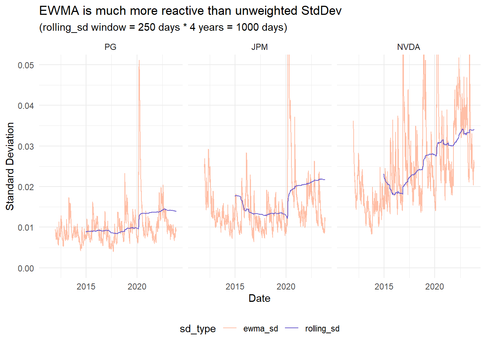
Let’s compare different lambda (aka, smoothing) parameters
library(dplyr)
library(ggplot2)
library(tidyr)
plot_ewma_for_stock <- function(data, symbol, returns_col, lambda_list,
custom_colors, custom_alphas, ylim) {
# Function to calculate EWMA variance - make sure this is defined in your environment
calculate_and_store_ewma <- function(data, symbol, returns_col, lambda_list) {
for (lambda in lambda_list) {
W = 250
lambda <- lambda
ewma_col_name <- paste0("lambda_", as.character(lambda))
data <- data |>
mutate(
!!ewma_col_name := sqrt(calculate_ewma_variance(get(returns_col), lambda, W))
)
}
return(data)
}
# Calculate and store EWMA with multiple parameters for the specified stock
stock_ewma <- calculate_and_store_ewma(data, symbol, returns_col, lambda_list)
# Pivot the data to long format for plotting
stock_ewma_long <- stock_ewma |>
pivot_longer(cols = starts_with("lambda"), names_to = "lambda", values_to = "ewma_sd")
# Plot the EWMA standard deviations for different parameter sets
gg <- ggplot(stock_ewma_long, aes(x = date, y = ewma_sd, color = lambda)) +
geom_line(aes(alpha = lambda)) +
scale_color_manual(values = custom_colors) +
scale_alpha_manual(values = custom_alphas) +
labs(title = paste("EWMA volatility for", symbol, "with Different Parameters"),
x = "Date",
y = "EWMA Standard Deviation") +
coord_cartesian(ylim = c(0, ylim)) +
theme_minimal() +
theme(legend.position = "right")
return(gg)
}
# Define the sets of parameters you want to compare
lambda_list <- c(0.91, 0.94, 0.97)
# custom_colors <- c("lambda_0.91" = "firebrick1",
# "lambda_0.94" = "royalblue",
# "lambda_0.97" = "springgreen4")
custom_colors <- c("lambda_0.91" = color_tenor1,
"lambda_0.94" = color_tenor2,
"lambda_0.97" = color_tenor4)
custom_alphas <- c("lambda_0.91" = 0.6,
"lambda_0.94" = 0.8,
"lambda_0.97" = 1.0)
jpm_ewma_plot <- plot_ewma_for_stock(jpm_data, "JPM", "daily.returns", lambda_list,
custom_colors, custom_alphas, 0.080)
pg_ewma_plot <- plot_ewma_for_stock(pg_data, "PG", "daily.returns", lambda_list,
custom_colors, custom_alphas, 0.0550)
nvda_ewma_plot <- plot_ewma_for_stock(nvda_data, "NVDA", "daily.returns", lambda_list,
custom_colors, custom_alphas, 0.070)
jpm_ewma_plot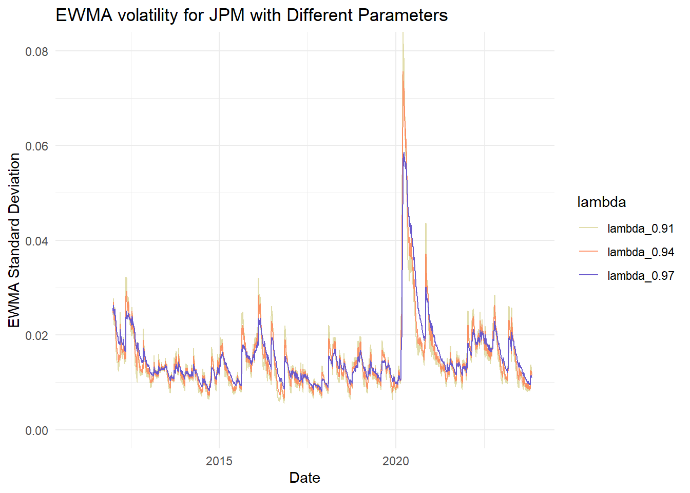
pg_ewma_plot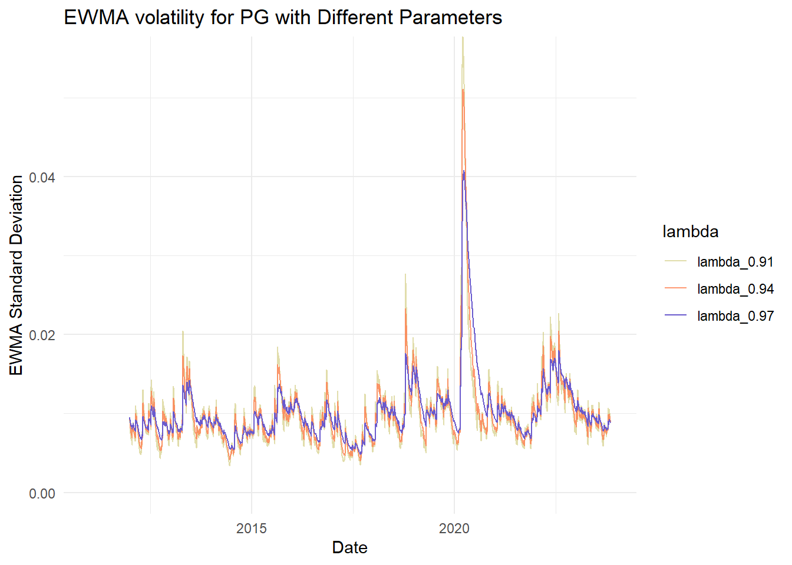
nvda_ewma_plot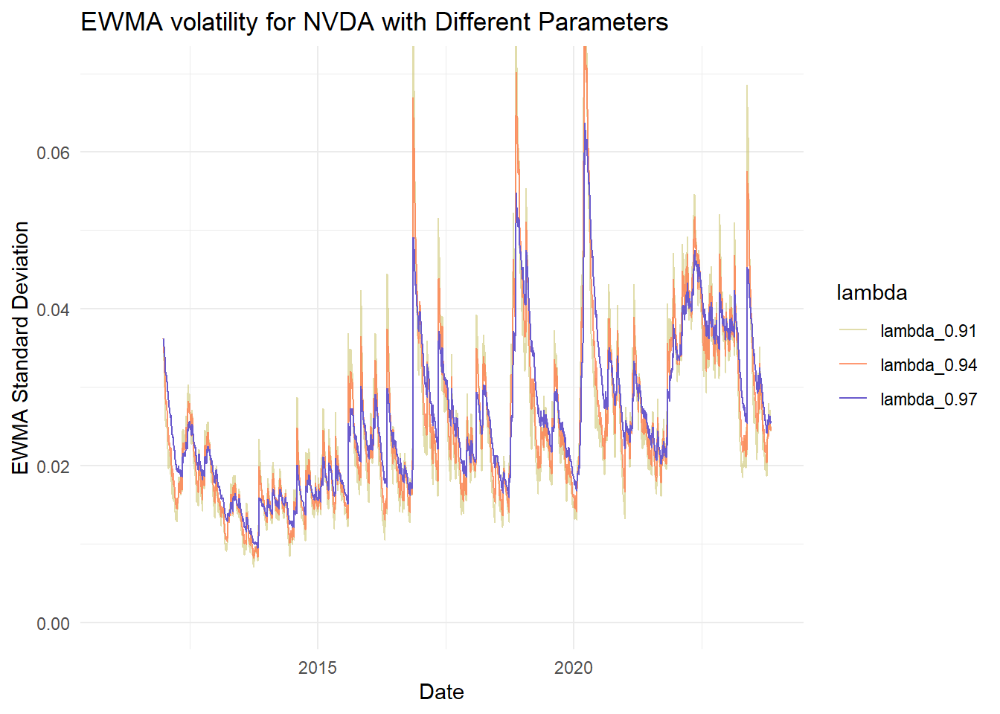
GARCH(1,1)
Fitting the parameters
# library(rugarch)
# Define the GARCH(1,1) specification outside the loop to avoid redundancy
spec <- ugarchspec(variance.model = list(model = "sGARCH", garchOrder = c(1, 1)),
mean.model = list(armaOrder = c(0, 0), include.mean = TRUE),
distribution.model = "norm")
# Fit the GARCH(1,1) model for each stock symbol
garch_models <- all_returns_daily |>
group_by(symbol) |>
nest() |>
mutate(model = map(data, ~ ugarchfit(spec, data = .$daily.returns)))
# Manual extraction of coefficients
garch_coef_manual <- garch_models |>
mutate(coef = map(model, function(m) as.data.frame(t(coef(m))))) |>
select(symbol, coef) |>
unnest(coef)
garch_coef_manual <- garch_coef_manual |> ungroup()
garch_coef_manual <- garch_coef_manual |> mutate(
gamma = 1 - alpha1 - beta1,
LR_vol = sqrt(omega / (1 - alpha1 - beta1))
)
garch_coef_manual |> select(-mu) |>
gt(rowname_col = "symbol") |>
fmt_scientific(columns = 2) |>
fmt_number(columns = 3:6, decimals = 4) | omega | alpha1 | beta1 | gamma | LR_vol | |
|---|---|---|---|---|---|
| PG | 1.06 × 10−5 | 0.1310 | 0.7744 | 0.0946 | 0.0106 |
| JPM | 9.31 × 10−6 | 0.0994 | 0.8659 | 0.0347 | 0.0164 |
| NVDA | 3.28 × 10−5 | 0.1006 | 0.8628 | 0.0366 | 0.0300 |
Plotting GARCH(1,1) volatility
# Function to calculate GARCH(1,1) variance
calculate_garch_variance <- function(returns, alpha, beta, gamma, W) {
long_run_variance <- var(returns[1:W], na.rm = TRUE)
omega <- gamma * long_run_variance
garch_var <- rep(NA, length(returns))
garch_var[W] <- var(returns[1:W]) # Initialize the first GARCH variance
for (i in (W+1):length(returns)) {
garch_var[i] <- omega + alpha * returns[i]^2 + beta * garch_var[i-1]
}
return(garch_var)
}
alpha <- 0.12; beta <- 0.78; gamma <- 1 - alpha - beta
alpha_mr <- 0.03; beta_mr <- 0.83; gamma_mr <- 1 - alpha_mr - beta_mr
# Calculate rolling GARCH(1,1) variance
all_returns_daily <- all_returns_daily |>
group_by(symbol) |>
mutate(garch_variance = calculate_garch_variance(daily.returns, alpha, beta,
gamma, W.daily),
garch_variance_mr = calculate_garch_variance(daily.returns, alpha_mr, beta_mr,
gamma_mr, W.daily)) |>
ungroup()
# Calculate the GARCH(1,1) standard deviation from the GARCH variance
all_returns_daily <- all_returns_daily |>
mutate(garch_sd = sqrt(garch_variance),
garch_sd_mr = sqrt(garch_variance_mr))
all_returns_long <- all_returns_daily |>
pivot_longer(cols = c("garch_sd", "garch_sd_mr", "ewma_sd"),
names_to = "sd_type", values_to = "sd_value")
custom_line_colors <- c("garch_sd" = color_tenor3,
"garch_sd_mr" = color_tenor2,
"ewma_sd" = color_tenor1)
custom_line_alphas <- c("garch_sd" = 1.0,
"garch_sd_mr" = 1.0,
"ewma_sd" = 0.8)
# Plot the data with ggplot2
garch_p1 <- ggplot(all_returns_long, aes(x = date, y = sd_value, color = sd_type)) +
geom_line(aes(alpha = sd_type)) +
scale_color_manual(values = custom_line_colors) + # Set custom colors
scale_alpha_manual(values = custom_line_alphas) + # Set custom alphas
labs(title = "GARCH(1,1) versus EMWA",
subtitle = "The second GARCH,garch_sd_mr, has higher γ -> greater mean reversion (m.r.)",
x = "Date",
y = "Standard Deviation") +
facet_wrap(~symbol) +
coord_cartesian(ylim = c(0, 0.05)) +
theme_minimal() +
theme(legend.position = "bottom")
garch_p1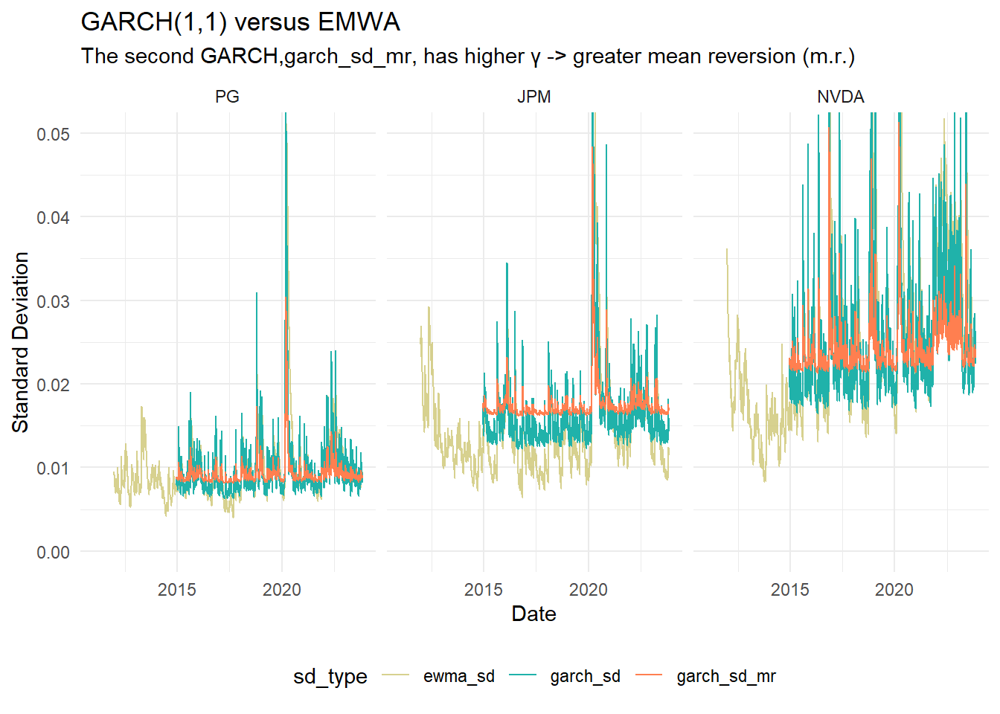
None of the returns are nearly normal
plot_histogram_with_normal <- function(stock_data, symbol, return_col) {
# Calculate mean and standard deviation of returns
mean_return <- mean(stock_data[[return_col]], na.rm = TRUE)
sd_return <- sd(stock_data[[return_col]], na.rm = TRUE)
binwidth <- (max(stock_data[[return_col]], na.rm = TRUE) -
min(stock_data[[return_col]], na.rm = TRUE)) / 120
# print(binwidth) experimenting with binwidth
# Create the histogram and overlay the normal distribution
ggplot(stock_data, aes_string(x = return_col)) +
geom_histogram(aes(y = ..density..), binwidth = binwidth,
color = "coral", fill = "khaki3", alpha = 0.6) +
stat_function(fun = dnorm, args = list(mean = mean_return, sd = sd_return),
color = "slateblue", size = 1) +
labs(title = paste("Histogram of Returns with Normal Distribution for", symbol),
x = "Returns",
y = "Density") +
theme_minimal() +
coord_cartesian(xlim = c(-0.1, 0.1))
}
jpm_hist_plot <- plot_histogram_with_normal(jpm_data, "JPM", "daily.returns")
pg_hist_plot <- plot_histogram_with_normal(pg_data, "PG", "daily.returns")
nvda_hist_plot <- plot_histogram_with_normal(nvda_data, "NVDA", "daily.returns")
jpm_hist_plot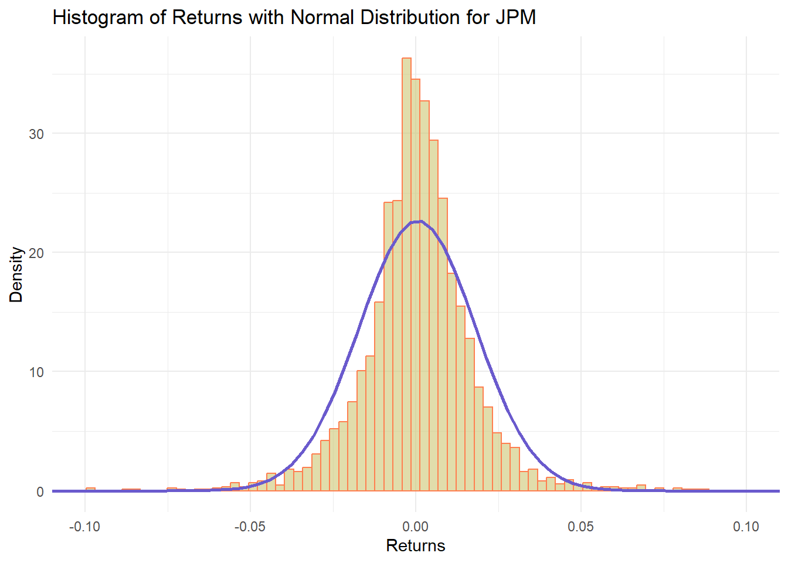
pg_hist_plot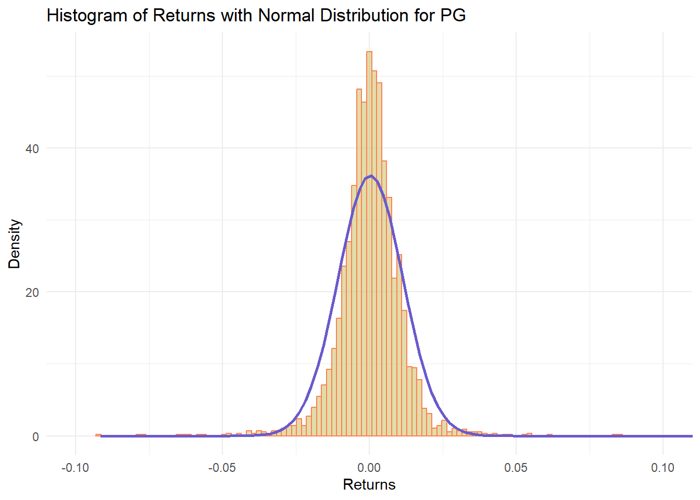
nvda_hist_plot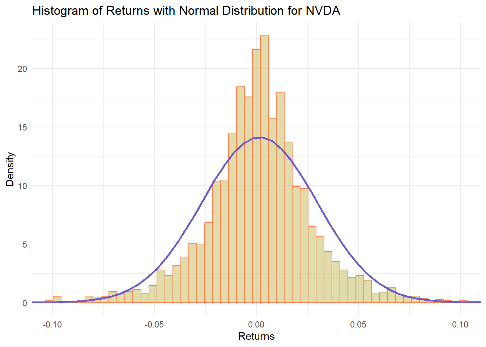
Summarize the moments
# Function to calculate the summary statistics
calculate_stats <- function(data, return_col) {
data |>
summarize(
mean = mean({{ return_col }}, na.rm = TRUE),
sd = sd({{ return_col }}, na.rm = TRUE),
skew = skewness({{ return_col }}, na.rm = TRUE),
kurt = kurtosis({{ return_col }}, na.rm = TRUE)
)
}
# Calculate statistics for each stock and store them in a tibble
stats_tibble <- tibble(
stock = c("PG", "JPM", "NVDA"),
stats = list(
calculate_stats(pg_data, daily.returns),
calculate_stats(jpm_data, daily.returns),
calculate_stats(nvda_data, daily.returns)
)
)
# Unnest the stats column to expand the tibble
stats_tibble <- stats_tibble |>
unnest(stats)
stats_tibble |> gt() |>
fmt_percent(columns = vars(mean, sd), decimals = 4) |>
fmt_number(columns = vars(skew, kurt), decimals = 4) |>
data_color(
columns = 4,
domain = c(-0.2, 0.4),
palette = c("lightpink", "seagreen1"),
alpha = 0.5
) |>
data_color(
columns = 5,
domain = c(0, 15),
palette = c("lightpink", "seagreen1"),
alpha = 0.5
)| stock | mean | sd | skew | kurt |
|---|---|---|---|---|
| PG | 0.0380% | 1.1017% | −0.0216 | 14.7342 |
| JPM | 0.0490% | 1.7601% | −0.0967 | 13.3437 |
| NVDA | 0.1509% | 2.8227% | 0.2871 | 10.6039 |
For fun (the social thumb)
nvda_roll_plot / garch_p1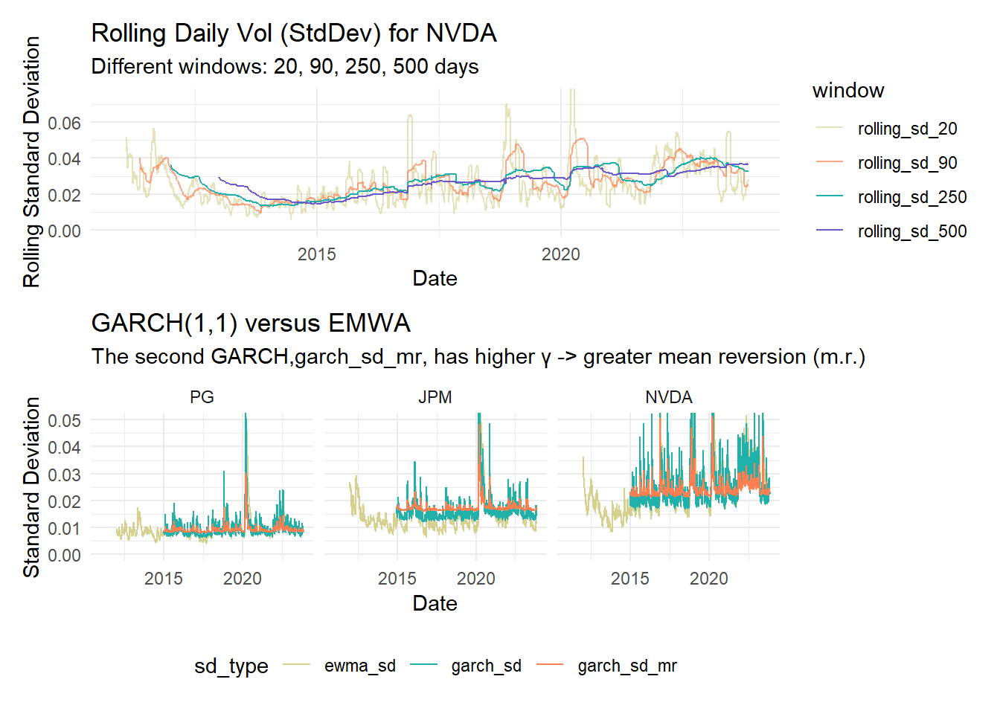